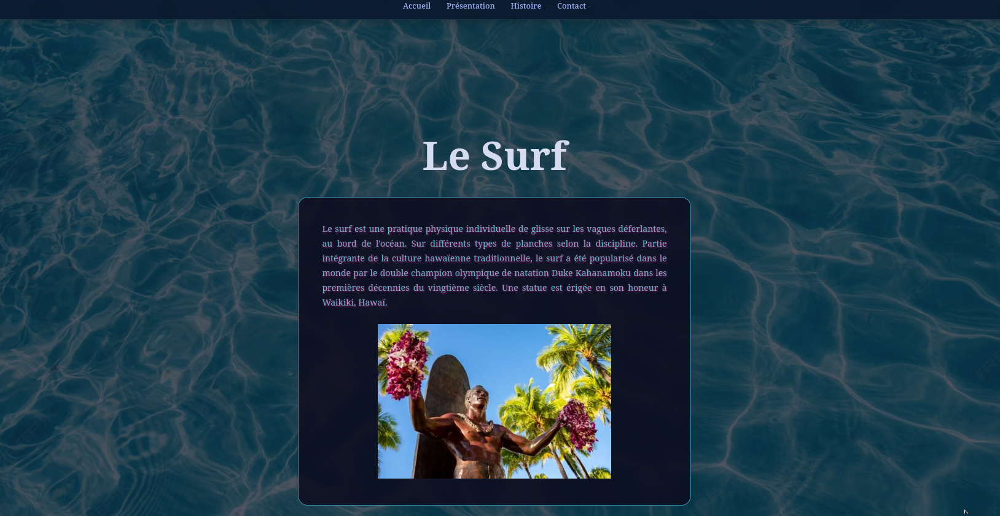

L’objectif de cette SAÉ était de concevoir un site web multipages adaptatif (Responsive Design) en utilisant exclusivement du HTML et du CSS. Ce travail demandait une rigueur méthodologique, notamment en respectant la norme W3C.
La problématique était de créer une interface utilisateur fluide et lisible tout en respectant le cahier des charges : conformité totale de la syntaxe aux normes du W3C, adaptabilité parfaite à tous les écrans (mobiles, tablettes, PC) et application rigoureuse des normes d'accessibilité numérique (WCAG 2.0 AA) et déposer le rendu à la date donnée : le 19 décembre 2025.
Points forts :
Nouveau : Ce projet m'a fait réaliser que le Web ne s'arrête pas au design visuel. L'accessibilité (permettre à un lecteur d'écran de naviguer aisément) et le respect des critères sémantiques stricts du W3C sont des composantes indispensables d’un produit fini professionnel.
Difficultés rencontrées et solutions : La principale contrainte a été d'harmoniser le rendu sur les écrans étroits sans rendre le contenu illisible. Pour résoudre cela, j’ai adopté une approche "Mobile-First", qui consiste à en premier construire le site pour smartphone avant d’étendre les styles vers les écrans plus larges.
A améliorer :
